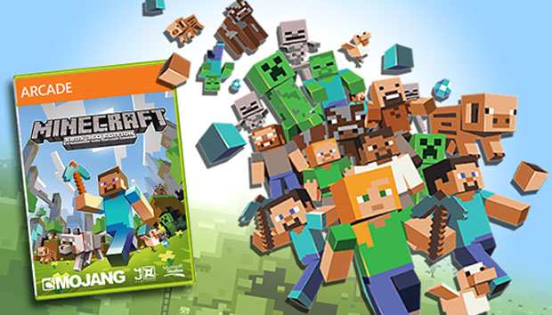

...Como se creo?
Minecraft es la creación del programador sueco Markus "Notch" Persson, quien anteriormente trabajó en las desarrolladoras de videojuegos King y más tarde jAlbum. Antes de centrarse completamente en Minecraft, Notch desarrolló algunos prototipos durante su tiempo libre, inspirado en juegos populares de la época. Entre los prototipos se encontraban RubyDung, un juego de construcción de bases, e Infiniminer, un juego de minería basado en bloques. Creo que todos vemos cómo se estaban formando las ideas detrás de Minecraft.
La primera edición de Minecraft, llamada Java Edition, fue creada por Notch durante un fin de semana a principios de mayo de 2009. El juego fue lanzado inicialmente al público el 17 de mayo en el foro TIGSource, un foro para desarrolladores de juegos independientes. Después de recibir comentarios de sus colegas, Notch actualizó el juego, que hoy en día se llama la versión Clásica. Se lanzaron algunas actualizaciones más durante los siguientes meses, las versiones Indev e Infdev, antes de que se lanzara la primera gran actualización, Alpha, el 30 de junio de 2010. Fue alrededor de esta época que Minecraft comenzó a ganar velocidad.
Notch renunció a su trabajo diurno para enfocarse únicamente en Minecraft. Con el dinero ganado del juego, fundó la ahora legendaria compañía de videojuegos Mojang, junto con sus colegas anteriores Carl Manneh y Jakob Porser. En este momento, Minecraft estaba siendo constantemente actualizado y calibrado. Se agregaron nuevos objetos, bloques, criaturas, recursos, mecánicas de juego, y el muy querido Modo Supervivencia. El 30 de diciembre, Minecraft ingresó a la fase Beta. En preparación para el lanzamiento completo, Mojang contrató nuevos empleados a medida que el juego y la cantidad de personas que lo jugaban crecían a un ritmo rápido.
La versión completa de Minecraft se lanzó el 18 de noviembre de 2011. Y fue un éxito inmediato. ¿No lo viste venir, verdad?! A partir de este momento, Minecraft realmente solo iba en una dirección. Y esa dirección era hacia arriba. Para centrarse en la dirección del juego y asumir un liderazgo más general, Notch renunció como Diseñador Principal y contrató a Jens "Jeb" Bergensten, quien tomó el control creativo total del juego.
A medida que crecía la base de jugadores, también lo hacía Mojang. Atar acuerdos con más socios y desarrolladores era imprescindible para apoyar y ampliar los límites del cada vez mayor Minecraft. Durante los próximos años, salieron varias nuevas ediciones y actualizaciones, incluidas la "Actualización de Aventuras", la "Actualización Bastante Aterradora" y "La Actualización que Cambió el Mundo". Se agregaron diseños más pulidos, más tipos de criaturas, biomas, objetivos, objetos y mecánicas de juego. Uno de los mayores atractivos de Minecraft era que estaba en constante cambio y actualización, con más cosas que hacer y experimentar. Nada ha cambiado hasta el día de hoy.
Después de todo el éxito e impacto de Minecraft en los corazones de tantos jugadores, Mojang y la propiedad intelectual de Minecraft fueron comprados por Microsoft en 2017, por una cantidad casi récord. Fue sugerido por el propio Notch en Twitter, buscando una corporación para comprar sus acciones.
Minecraft continuó desarrollándose y agregando más de literalmente todo. Combates contra jefes, un elemento subterráneo mucho más grande, dimensiones y áreas adicionales. El juego fue introducido en varias nuevas consolas y plataformas durante los años. Xbox, Playstation, Nintendo, la Edición Pocket para móviles. Incluso la realidad virtual tuvo una parte del pastel de Minecraft. Básicamente, si tienes una máquina electrónica de cualquier tipo, puedes jugar el juego.
Link a la Wiki de Minecraft